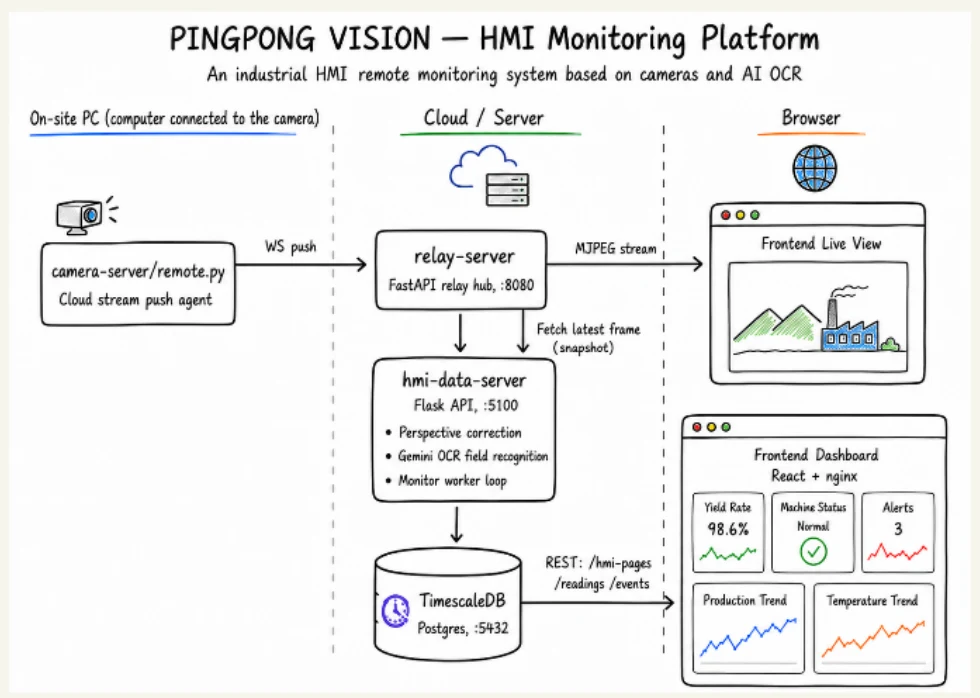

HMI 监控平台
PingPong Vision——基于摄像头的 HMI 可视化
PingPong Vision 用摄像头和 AI OCR 读取生产设备的 HMI 屏幕，再把读数转化为实时看板数据。
摄像头输入
AI OCR字段读取
数据库历史 + 事件
问题：设备数据被困在 HMI 屏幕后面
老旧设备和厂商封闭的平台往往不开放 PLC/API 数据。可见的屏幕常常是唯一通用的接口。
01无需 PLC 集成
系统不涉及控制指令、OPC UA 标签和设备自动化逻辑。
02跨品牌通用
摄像头可以观察西门子、Multivac、老式面板以及类模拟仪表界面。
03形成历史数据
屏幕上可见的数值变成结构化读数、事件和看板趋势。
核心流程：一个摄像头把屏幕变成数据
操作员只需配置一次 HMI，之后 worker 会持续从实时画面中读取已配置的字段。
- 01 采集 HMI——USB 摄像头在本地或通过中继服务推流设备屏幕
- →
- 02 标定字段——初始化时保存屏幕四角和各字段的边界框
- →
- 03 读取 + 存储——worker 做透视校正、调用 Gemini OCR 并保存读数
架构

每个服务负责视觉流水线中的一部分
| 服务 | 职责 |
|---|---|
camera-server | 运行在摄像头所连的 PC 上；在局域网提供 MJPEG，或把画面推送到中继。 |
relay-server | 为每个摄像头缓存最新一帧，并把 MJPEG 分发给前端和 worker。 |
hmi-data-server | 业务 REST API；管理 HMI 页面、字段、读数、事件和监控任务。 |
hmi-monitor-worker | 真正执行 OCR 循环并写入读数的单一进程。 |
| TimescaleDB | 存储 HMI 页面、字段定义、时序读数、事件和 worker 状态。 |
数据模型：HMI 数据保存在后端
浏览器只保存临时的会话状态。HMI 业务数据都从 HMI 数据服务器读取、写入。
| 表 | 内容 |
|---|---|
hmi_pages | 已配置的摄像头/HMI 页面或设备位置。 |
hmi_fields | 识别出的标签、单位、可视类型和 bbox_percent。 |
hmi_readings | 时序 OCR 数值、置信度、延迟和元数据。 |
hmi_events | 画面变化、运行事件和字段阈值告警。 |
hmi_monitor_jobs | 期望的监控状态，以及 worker 心跳/状态。 |
事件与可靠性：监控不只是 OCR 数值
01画面变化 AI
比较基准帧与实时帧，检测手部遮挡、摄像头移动、页面切换或数值变化。
02运行事件
worker 会记录 camera_connection_lost 和 repeated_unreadable_values。
03字段阈值
看板规则可以把读数转化为警告和告警。
已知限制：标定依赖于摄像头的对准和 HMI 页面的稳定。如果摄像头移动或屏幕布局变化，已保存的字段框可能不再与实时画面对应。
总结
PingPong Vision 读取的是设备屏幕，而不是设备控制器。该项目展示了一条无侵入式实现生产可视化的路径：摄像头采集、AI OCR、时序存储、事件记录，以及面向 HMI 设备监控的看板。